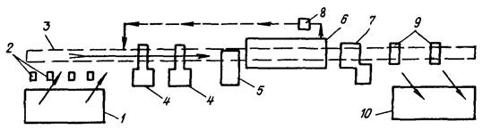
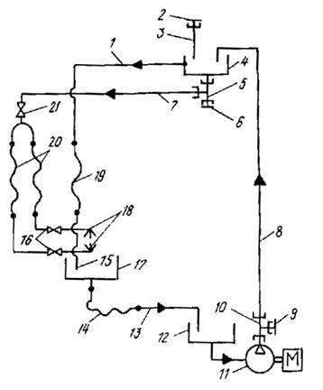

МИНИСТЕРСТВО
МОНТАЖНЫХ И СПЕЦИАЛЬНЫХ
СТРОИТЕЛЬНЫХ РАБОТ СССР
УТВЕРЖДАЮ:
заместитель министра
монтажных и специальных
строительных работ СССР
К.К. Липодат
13 декабря 1984 г.
ИНСТРУКЦИЯ
ПО ПРИМЕНЕНИЮ ИЗОЛА ДЛЯ
ПРОТИВОКОРРОЗИОННОЙ ЗАЩИТЫ
СТАЛЬНЫХ ТРУБОПРОВОДОВ
ТЕПЛОВЫХ СЕТЕЙ
ВСН 454-84
Минмонтажспецстрой
СССР
Центральное бюро
научно-технической информации
Москва-1985
Настоящая инструкция разработана Всесоюзным научно-исследовательским институтом гидромеханизации, санитарно-технических и специальных строительных работ (ВНИИГС).
Действие инструкции распространяется на применение температуростойкого изола (ГОСТ 10296-79) для защиты наружной поверхности стальных трубопроводов тепловых сетей, транспортирующих теплоноситель с температурой до 150 °С и прокладываемых в проходных и непроходных каналах и туннелях, а также при бесканальной прокладке в соответствии со СНиП II-36-73.
Инструкция разработана cт. научным сотрудником лаборатории противокоррозионных работ, к.т.н. Т.А. Шитовой, зав. лабораторией А.П. Харченко.
|
Министерство монтажных и специальных строительных работ СССР (Минмонтажспецстрой СССР) |
Ведомственные строительные нормы |
ВСН 454-84 |
|
Минмонтажспецстрой СССР |
||
|
Инструкция по применению изола для противокоррозионной защиты стальных трубопроводов тепловых сетей |
Вводится впервые |
1.1. Инструкцией определяется применение изола:
а) в заводских условиях на механизированных линиях;
б) при исправлении дефектов покрытия, возможных в период транспортирования;
в) при производстве монтажных работ для заделки стыковых соединений.
1.2. Технологический процесс нанесения изольной изоляции включает в себя следующие стадии:
а) подготовку металлической поверхности трубопровода под окраску;
б) нанесение слоя битумной грунтовки;
в) сушку грунтовочного слоя;
г) навивку в два слоя изола с одновременным нанесением на поверхность ленты изольной мастики;
д) нанесение одного слоя оберточной бумаги.
1.3. Расходы материалов при получении противокоррозионного изольного покрытия по холодной изольной мастике в зависимости от диаметра трубопровода приведены в табл. 1.
Таблица 1
|
Расход материала на 1 м трубы |
||||||
|
битума БН-4, кг |
мастики изол, кг |
изола, м2 |
бумаги, кг |
бензина |
||
|
кг |
л |
|||||
|
57 |
0,015 |
0,14 |
0,50 |
0,27 |
0,04 |
0,055 |
|
76-89 |
0,020-0,025 |
0,18-0,21 |
0,63-0,71 |
0,029-0,034 |
0,05-0,07 |
0,070-0,098 |
|
108-159 |
0,028-0,042 |
0,23-0,35 |
0,81-1,15 |
0,042-0,659 |
0,08-0,10 |
0,112-0,140 |
|
219-377 |
0,052-0,094 |
0,46-0,84 |
1,47-2,47 |
0,067-0,109 |
0,15-0,25 |
0,210-0,350 |
|
426-720 |
0,105-0,189 |
0,94-1,57 |
2,78-4,83 |
0,125-0,202 |
0,29-0,50 |
0,406-0,700 |
|
Внесены Всесоюзным научно-исследовательским институтом гидромеханизации, санитарно-технических и специальных строительных работ Минмонтажспецстрой СССР |
Утверждены
Минмонтажспецстроем СССР |
Срок введения
в действие |
2.1. Все материалы и оборудование, необходимые для получения противокоррозионного изольного покрытия, должны соответствовать требованиям нормативных документов (справочные приложения 1 и 2):
битум - ГОСТ 6617-76;
бензин - ГОСТ 2064-77;
мастика изол - ТУ 21-27-37-74;
изол - ГОСТ 10296-79;
бумага - ГОСТ 2228-81; ГОСТ 8273-75 (марка А).
2.2. Предприятие-изготовитель должно гарантировать соответствие отгружаемого материала требованиям стандарта и сопровождать каждую отправленную партию документом с указанием даты изготовления и результатов испытаний, т.е. сертификатом на изделие.
Для партии изола в документе завода-изготовителя дополнительно должны быть указаны количество рулонов и площади каждого из них.
2.3. Изол в соответствии с ГОСТ 10296-79 поставляется в рулонах шириной 800 и 1000 мм, площадью 10-15 м2. В одном рулоне допускается не более двух полотен. Минимальная длина полотна должна быть не менее 3 м; в партии допускается не более 5 % составных рулонов.
2.4. Торцы рулона изола, края полотен в стыке рулона должны быть ровно обрезаны. Полотно изола не должно иметь непереработанных частиц резины, посторонних включений, трещин, дыр, разрывов, складок и надрывов кромок.
2.5. Внутренняя поверхность полотна изола в рулоне должна быть покрыта сплошным слоем молотого талька или талькомагнезита (ГОСТ 21235-75).
2.6. Изол при минус 15 °С должен выдерживать изгиб на стержне диаметром 10 мм (не должно быть трещин)*, температуроустойчивость - не менее 150 °С**.
* Методика определения: изол и стальной стержень в течение 20 мин выдерживают в хладокамере или морозильной камере бытового холодильника при минус 15 ± 1 °С. Охлажденный образец в течение 2 с огибают по полуокружности стержня. Время с момента изъятия образца из хладокамеры до испытаний не должно превышать 10 с.
** Для определения температуроустойчивости образцы изола, подвешенные в вертикальном положении, выдерживают в сушильном шкафу при 150 ± 2 °С в течение 2 ч. При увеличении длины образцов, появлении вздутий (визуальный осмотр) изол считается не выдержавшим испытаний.
2.7. Плотность поступающей с завода-изготовителя изольной мастики должна быть 1,07-1,13 г/см3 (измеряется ареометром, ГОСТ 18481-73).
2.8. Противокоррозионное покрытие на основе изола по холодной изольной мастике должно удовлетворять следующим требованиям:
а) по внешнему виду - сплошное, ровное, с равномерной намоткой изола и бумаги по длине, без пропусков, морщин, вздутий и отслоений (оценивается визуально);
б) толщина двухслойного покрытия должна быть 5 ± 1 мм (замеряется толщиномером МТ-31Н или другими средствами измерения без нарушения сплошности покрытия);
в) длина неизолированных участков на концах трубопроводов должна быть 100-150 мм (контролируется любыми средствами измерения). На этих местах допускается наличие слоя битумной грунтовки;
г) адгезия покрытия при отрыве надрезанной изоляции не менее 20 Н. Методика определения оплота в п. 8.7д настоящей инструкции.
3.1. Полотно изола (ГОСТ 10296-79) поставляется заводом-изготовителем намотанным на сердечник диаметром не менее 60 мм. Каждый рулон изола по всей ширине должен быть обернут бумагой по ГОСТ 8273-75. Края бумаги вдоль всего рулона должны быть проклеены. На этикетке каждого рулона должны стоять товарный знак и наименование завода-изготовителя, номер партии и наименование материала.
3.2. Рулоны изола при транспортировании укладывают в горизонтальном положении правильными рядами, при этом обеспечивают сохранность нижнего ряда рулонов изола от повреждений, для чего его укладывают на деревянные лаги шириной 15-20 см.
3.3. Транспортирование изола производят только в крытых вагонах или других закрытых транспортных средствах, причем при погрузке, разгрузке и транспортировании рулонов изола при температуре ниже минус 15 °С, при которой изол обладает повышенной хрупкостью, принимают меры предохранения изола от механических повреждений. Складирование изола при такой температуре допускается не более чем в два ряда по высоте.
3.4. Хранят рулоны изола уложенными в правильные горизонтальные ряды (3-4 ряда по высоте) в сухих закрытых помещениях.
3.5. Изольная мастика (ТУ 21-27-37-74) поставляется заводом-изготовителем в закрытых металлических бочках или бидонах с надписью на этикетках «Огнеопасно», В этой таре она хранится на складе горюче-смазочных материалов. При хранении и транспортировании изольная мастика защищается от попадания прямых солнечных лучей.
4.1. Для получения противокоррозионного защитного покрытия из изола по холодной изольной мастике должны быть предварительно подготовлены: раствор битумной грунтовки и изольной мастики, лента изола.
4.2. Грунтовку готовят растворением нефтяного битума марки БН 70/30 (ГОСТ 6617-76) в бензине (ГОСТ 2064-77) при массовом соотношении 1:2,5 или объемном 1:3.
Отмеренное количество битума в специальном битумноплавильном помещении предварительно разогревают до жидкого состояния (160-180 °С). Расплавленный битум сливают в железную емкость и охлаждают до 80-90 °С.
В другом помещении (можно на открытом воздухе) смешивают разогретый битум (температура не выше 80-90 °С) с бензином. Для этого в специальную ванну выливают отмеренное количество бензина, добавляют битум (тонкой струей) при непрерывном перемешивании деревянной мешалкой. Перемешивание прекращают после полного растворения битума. Качество приготовленного раствора битума (грунтовки, праймера) проверяют по вязкости (25-30 с по ВЗ-4 при 20 ± 2 °С) и плотности (0,80-0,85 г/см3 при 20 ± 2 °С).
4.3. Проверенную грунтовку (праймер) выливают в ванну праймерного отделения и подают в расходный бачок для нанесения.
4.4. Подготовка изольной мастики производится в том случае, если ее исходная плотность выше 0,82-0,83 г/см3. Доведение изольной мастики до указанной плотности осуществляют добавлением бензина ГОСТ 2084-77. Готовый раствор мастики должен быть однородным, без комков и посторонних включений. Контроль плотности выполняют ареометром, как указано в п. 8.4 настоящей инструкции.
4.5. Трубопроводы в зависимости от их диаметра оклеиваются лентами изола шириной 160-400 мм. Изол из рулонов, поступающих с завода-изготовителя, предварительно перед нанесением нарезают на ленты. Зависимость ширины изола в ленте от диаметра изолируемых труб приведена в табл. 2.
Таблица 2
|
Ширина рулонного материала, мм |
||
|
Изол (двойная обмотка) |
Бумага (однослойная обмотка) |
|
|
57 |
160 |
90 |
|
76-89 |
200 |
110 |
|
108-159 |
300 |
160 |
|
219-1600 |
400 |
210 |
Разрезку рулонов изола рекомендуется выполнять дисковой механической пилой, специальным приспособлением или на механизме для резки рулонных материалов.
4.6. Перед нанесением рулон изола перематывают и удаляют с его поверхности с обеих сторон минеральную присыпку с помощью волосяной щетки или ветоши, смоченной в бензине.
4.7. Оберточная бумага также предварительно нарезается на ленты шириной 90-210 мм в зависимости от диаметра трубопровода (см. табл. 2).
5.2. Наружную поверхность труб очищают механически или вручную стальными щетками от грязи, продуктов коррозии и окалины. Степень очистки должна быть не менее III, а степень обезжиривания - не менее II согласно ГОСТ 9.402-80.
5.3. В заводских условиях очистка наружной поверхности труб (см. справочное приложение 1) может производиться специальной очистной машиной, оборудованной прижимными щетками, дробеструйной (пескоструйной) или иглофрезерной установкой.
5.5. После обезжиривания на поверхность труб наносится грунтовка (праймер). Качественная грунтовка способствует образованию надежной связи покрытия с металлом трубы, а также служит консервационным покрытием. Перед нанесением контролируют плотность и вязкость грунтовки согласно п. 4.2 настоящей инструкции.
5.6. Грунтовку наносят непосредственно после очистки и обезжиривания поверхности труб. Нанесение грунтовки на влажную, загрязненную или плохо очищенную поверхность не допускается. Грунтовку наносят в один слой методом воздушного распыления, валиками или кистью (без пропусков, сгустков и «сосулек» внизу трубы). Сушка грунтовки - воздушная при 20 ± 2 °С в течение 30 мин. Толщина слоя грунтовки должна быть 0,1-0,2 мм.
5.7. При механизированном способе для нанесения более равномерного слоя грунтовки используют прижимные войлочные или брезентовые полотенца.
6.1. Подготовленная для оклейки изолом труба, покрытая грунтовкой, укладывается на ролики. При вращении трубы на ее поверхность наносится изольная мастика слоем толщиной не более 0,5-1,0 мм. Изольная мастика таким же слоем может наноситься непосредственно на ленту изола с двух сторон методом окунания, что при покрытии трубы изолом дает такой же эффект, как и непосредственное нанесение изольной мастики на грунтовку (см. описание технологической линии по нанесению изоляции в рекомендуемых приложениях 3 и 4).
Перед нанесением мастики на оклеиваемую поверхность проверяют ее плотность согласно п. 4.4 настоящей инструкции.
Нанесение мастики на трубы больших диаметров можно производить краскораспылителем с соплом для штукатурных работ. При малых диаметрах труб применяются окрасочные овчинные валики или широкие волосяные кисти*.
* Щетки с капроновой щетиной плохо удерживают мастику, а поролоновый валик в ней размягчается.
6.2. После нанесения на трубу мастики (или двухстороннего окунания) лента изола спирально наклеивается на трубопровод с нахлестом, на 20-50 мм превышающим половину ширины ленты (в этом случае получается за одну навивку двухслойное покрытие изола). Если изольную мастику на ленту изола наносят не методом двухстороннего окунания, то на наружную поверхность изола наносят дополнительно слой изольной мастики.
6.3. Трубы в зависимости от их диаметра оклеиваются лентами изола шириной 160-400 мм (см. п. 4.5 настоящей инструкции).
6.4. Наружная поверхность изола оклеивается спирально в один слой бумагой по слою мастики. Бумага выполняет защитные функции, а также облегчает определение мест повреждения изоляции во время транспортирования. Нанесение мастики при этом производится спиральной полосой шириной 20-80 см с шагом 0,5 м.
6.5. Концы труб длиной 100-150 мм должны оставаться без изоляции.
7.1. Изоляцию стыков труб выполняют после сварки стыков, опрессовки и приемки участка трубопровода.
7.2. Неизолированные концы стыкуемых труб очищают от грязи, продуктов коррозии и сварки механическим способом (скребками, металлическими щетками), обезжиривают согласно пп. 5.1, 5.2 и 5.4 настоящей инструкции и высушивают в течение 0,5 ч.
7.4. Намотку производят в такой последовательности: конец ленты изола длиной 1,5 витка трубы покрывают (с помощью волосяной кисти, овчинного валика - см. сноску и п. 6.1) мастикой, закрепляют затягиванием витка, остальную часть ленты изола постепенно покрывают мастикой с обеих сторон и наматывают с указанным в п. 7.3 нахлестом витков по всей длине стыка. Конец ленты прикрепляется к трубе проволокой или пеньковым шпагатом.
7.5. Рулоны изола для изоляции стыков предварительно нарезают на ленты и скручивают в катушки. Концы лент расправляют и очищают от упаковочной бумаги. Избыточную присыпку талька сметают. Ширину лент принимают 200-270 мм для труб диаметром до 300 мм и 400-500 мм - свыше 300 мм.
7.6. Изоляцию стыков выполняют при температуре окружающего воздуха не ниже минус 15 °С.
Для работы при низких температурах изол нарезают на ленты, скатывают в катушки, прогревают в теплом помещении и к месту работ доставляют в утепленном ящике. Мастику, также прогретую в теплом помещении, доставляют в термосе вместимостью 10-12 л.
7.8. Изоляцию трубопроводов на монтаже производят по технологии, описанной в пп. 7.1-7.7 настоящей инструкции.
7.9. Перед укладкой трубопроводов на трассе все видимые дефекты и повреждения изоляции должны быть заделаны наклейкой изола в два слоя с предварительной очисткой ремонтируемого места по технологии, указанной в пп. 7.1-7.7 настоящей инструкции.
7.10. Качество получаемого изольного покрытия при изоляции на монтаже стыковых соединений и ремонте должно быть проверено согласно п. 8.7 настоящей инструкции.
8.1. Трубы с изольным покрытием принимаются ОТК завода партиями по мере их изготовления. Размер партии - не более 500 м изолированных труб. Приемка изольного покрытия должна производиться не ранее 6 ч после его нанесения.
8.2. Контролю подлежат:
а) качество изола, бумаги и изольной мастики, поступающих с завода-поставщика, в соответствии с пп. 2.1-2.7;
б) соблюдение правил подготовки и хранения материалов перед нанесением покрытия на соответствие разделам 3, 4 настоящей инструкции;
в) качество подготовки поверхности на соответствие требованиям раздела 5;
г) соблюдение технологии нанесения покрытия;
д) качество получаемого изольного покрытия.
8.3. Контроль качества грунтовки производят определением ее плотности и вязкости.
Вязкость грунтовки должна быть в пределах 25-30 с по вискозиметру ВЗ-4 (ГОСТ 9070-75) при температуре 20 ± 2 °С; плотность замеряется ареометром (ГОСТ 18481-81) и должна быть в пределах 0,8-0,85 г/см при 20 ± 2 °С.
Частота определений - один раз в смену.
8.4. Качество изольной мастики контролируется определением плотности и температуры раствора (два раза в смену). Плотность мастики 0,83-0,83 г/см3, при 20 + 2 °С. Данные о температуре изольной мастики и изола при нанесении их на поверхность трубопровода приведены в табл. 3.
Таблица 3
|
Температура, °С |
||
|
труб |
изольной мастики |
изола |
|
плюс 10 |
плюс 12 ± 2 |
плюс 12 ± 2 |
|
плюс 5 |
плюс 12 ± 2 |
плюс 12 ± 2 |
|
ниже 0 |
плюс 50 ± 2 |
плюс 50 ± 2 |
Определение плотности производят ареометром (ГОСТ 16481-81), температуру изола и изольной мастики контролируют термометром техническим № 4 ГОСТ 2823-73.
8.5. Контроль качества подготовки поверхности трубопровода под окраску проводят визуально два раза в смену. Поверхность труб должна быть очищена от грязи, продуктов коррозии и окалины до металлического блеска (степень очистки III согласно ГОСТ 9.402-80).
8.6. Для соблюдения технологии нанесения покрытия необходимо постоянно следить за ее соответствием требованиям разделов 2-8, 10 настоящей инструкции.
8.7. Качество получаемого покрытия контролируется по следующим показателям:
а) перекрытие витков изола и бумаги, длину неизолированных концов труб определяют металлической линейкой ГОСТ 427-75 с точностью до 1 мм. Лента изола должна спирально наклеиваться на трубу с нахлестом, на 20-50 мм превышающим половину ширины ленты. Концы труб длиной 100-150 мм должны быть свободны от изольного покрытия (допускается покрывать эти участки слоем битумной грунтовки);
б) покрытие по внешнему виду должно быть сплошным, ровным, с равномерной намоткой изола по длине, без пропусков, морщин, вздутий и отслоений краев и концов последнего витка. В местах склейки ленты изола не должно быть остатков бумаги;
в) толщину покрытия контролируют толщиномером МТ-31Н или другими средствами измерений без нарушения сплошности покрытия. Толщина покрытия должна быть 5 ± 1 мм;
г) плотность прилегания покрытия к поверхности трубопровода проверяется простукиванием деревянным молотком массой 500 г, при этом должен быть слышен чистый звон, подтверждающий отсутствие пустот;
д) адгезия покрытия проверяется надрезкой изоляции до металла по двум сходящимся под углом 45-50° линиям и определением усилия отрыва с помощью динамометра. Покрытие должно отделяться от трубы с усилием не менее 20 Н;
е) контроль оплошности выполняют искровым дефектоскопом ДИ-74 напряжением 4 кВ на миллиметр толщины покрытия с учетом обертки. Контроль оплошности изольного покрытия производят в случае ремонта выявленных дефектов изоляции и на первых трех трубах каждого диаметра партии.
9.2. Трубы с изольным покрытием должны транспортироваться на специальных автомашинах с прицепом, оборудованных резиновыми прокладками для труб и специальными крепежными устройствами.
9.3. Погрузочно-разгрузочные операции должны выполняться с помощью крана с использованием специальных строповочных устройств и в соответствии со схемами строповки, утвержденными Госгортехнадзором:
а) трубы большого диаметра стропуются только торцовыми захватами;
б) трубы малого диаметра стропуются пакетом эластичными «полотенцами». Масса пакета не должна превышать допустимую нагрузку на полотенце.
9.4. Монтаж, складирование, транспортирование и погрузочно-разгрузочные операции трубами должны исключать механическое повреждение покрытия.
Не допускаются разгрузка труб путем их сбрасывания или опрокидывания кузова автомашины, строповка труб петлей троса, а также перетаскивание труб волоком по земле.
9.5. Трубы с изольным покрытием должны храниться:
а) диаметром до 300 мм - на стеллажах высотой до 2,2 м;
б) диаметрами 300-820 мм - в штабелях высотой до 1,2 м с прокладками и концевыми упорами.
9.6. На строительных площадках изолированные трубы должны храниться в соответствии с требованиями СНиП III-4-80.
9.7. Нанесение тепловой изоляции на трубопроводы с изольным покрытием производят в том случае, если качество противокоррозионного покрытия соответствует требованиям п. 8.7, а хранение и транспортирование трубопроводов осуществляются согласно пп. 9.1-9.6 настоящей инструкции.
10.1. При нанесении изольного покрытия на трубопроводы применяются следующие пожароопасные вещества и материалы:
а) мастика изол ТУ 21-27-37-74. Температура самовоспламенения 340 °С, температура вспышки 200-285 °С;
б) изол ГОСТ 10296-79 (горючий изоляционный материал). Температура воспламенения 315-340 °С, температура самовоспламенения 400-415 °С;
в) битумы нефтяные строительные ГОСТ 6617-76. Температура самовоспламенения 368 °С, температура вспышки 220-300 °С;
г) бензины автомобильные ГОСТ 2064-77. Температура самовоспламенения 255-3700, температура вспышки минус 27 минус 39 °С, взрывоопасная концентрация с воздухом составляет 0,5-6 %, ПДК - 100 мг/м3.
10.2. Согласно СНиП II-2-80 и в соответствии с противопожарными нормами здание цеха изоляции труб выполняется из несгораемых материалов II степени огнестойкости. Все конструкционные элементы цеха изготовляются из огнестойких материалов (кирпич, железобетон, металлоконструкции).
10.3. По степени пожароопасности согласно СНиП II-90-81 отделение изоляции труб относится к категории А, в отделении устанавливаются пенные генераторы типа ПГП-100.
Обеспечение конвейерной линии средствами пожаротушения должно быть предусмотрено проектом и согласовано c инспекцией Государственного пожарного надзора.
10.4. Применяемые средства пожаротушения должны максимально ограничивать размеры пожара и обеспечивать его тушение. Согласно правилам устройства электроустановок (ПУЭ) отделение изоляции труб относится к классу помещений c повышенной опасностью В-1. Электрооборудование выполняется во взрывобезопасном исполнении.
10.5. Отделение изоляции должно оборудоваться местной и общеобменной вентиляцией.
Элементы конструкции вентиляционных систем должны отвечать требованиям ГОСТ 12.2.003-74.
10.6. Местные отсосы должны быть установлены непосредственно у накатывающих валиков изоляционной машины и на участке конвейера от мастикопротирочного устройства до наложения ленты на трубу. Общая вытяжная вентиляция должна иметь заборные отверстия вверху и не выше 20 см от пола, так как пары бензина тяжелее воздуха.
10.7. Помещение мастикоприемника должно быть оборудовано отдельной вентиляцией.
10.8. В помещении по производству изоляции норма освещенности на рабочих местах согласно СНиП II-4-79 составляет 100 лк. Предельно допустимый уровень (ПДУ) шума согласно СН 245-71 и ГОСТ 12.1.003-71 на рабочих местах не должен превышать 85 дБ.
10.9. К выполнению работ по изоляции труб допускаются лица не моложе 18 лет, прошедшие медицинское освидетельствование, обученные безопасным методам работ, прошедшие инструктаж и сдавшие экзамен по технике безопасности и пожарной безопасности, а также имеющие удостоверение на допуск к работе.
10.10. При производстве работ по изольной изоляции необходимо руководствоваться СНиП III-4-80, ч. III, гл. 4.
10.11. Требования безопасности к размещению, хранению, транспортированию и использованию исходных материалов, расположению и организации рабочих мест должны соответствовать ГОСТ 12.3.002-75, ГОСТ 6617-76, ГОСТ 10296-79, ТУ 21-27-37-74 и ГОСТ 2084-77.
10.12. При выполнении изоляционных работ с применением вредных и огнеопасных материалов следует обеспечить защиту работающих от воздействия вредных веществ согласно ГОСТ 12.1.007-76 и термических ожогов согласно ГОСТ 12.4.011-75; изоляционные работы производить в помещениях согласно ГОСТ 12.1.005-76 и ГОСТ 12.4.021-75.
10.13. Требования противопожарной безопасности при нанесении противокоррозионного изоляционного покрытия должны соответствовать ГОСТ 12.1.004-76.
10.14. В мастикоприемнике, на изоляционном участке и выходной накопительной площадке должен быть установлен противопожарный режим: запрещено курение, пользование открытым огнем, вывешены предупредительные надписи: «Не курить», «Огнеопасно» и т.п.; обеспечены средства пожаротушения (огнетушители, песок, лопаты, войлок или асбестовое полотно размерами 2 х 2 м2). Вращающиеся части линии должны быть ограждены согласно ГОСТ 12.2.003-74.
10.15. При наложении изоляции, особенно первого витка изола на трубу, необходимо соблюдать осторожность, чтобы руки или одежда изолировщика не попали под ленту и т.д. Одежда изолировщика не должна иметь свисающих концов.
10.16. В конце смены кран подающего мастикопровода закрывают. Мастикопроводы, ванночки, клапаны и сифоны промывают бензином.
10.17. По окончании работы руки необходимо протирать ветошью, смоченной в растворе кальцинированной соды или керосине.
10.18. Все обтирочные материалы должны собираться в специальные металлические ящики с крышками и в конце рабочей смены удаляться в специальное безопасное место для уничтожения.
Справочное
|
Наименование оборудования и приспособлений |
ГОСТ |
Назначение |
|
1 |
2 |
3 |
|
Ареометр |
ГОСТ 18481-73 |
Для определения плотности грунтовки и изольной мастики |
|
Вискозиметр ВЗ-4 |
ГОСТ 9070-75 |
Для определения вязкости битумной грунтовки и изольной мастики |
|
Секундомер |
ГОСТ 5072-79 |
|
|
Стаканы стеклянные химические |
- |
|
|
Термометр технический № 4 |
ГОСТ 2823-73 |
Для контроля температуры изольной мастики |
|
Линейка металлическая |
Для контроля длины неизолированных участков трубы |
|
|
Толщиномер МТ-31М |
- |
- |
|
Дефектоскоп ДН-74 |
- |
- |
|
Отсекатель с пневматическим приводом |
Нестандартизированное оборудование |
Для укладки труб на рольганг |
|
исходный стеллаж |
То же |
Для накопления труб, подлежащих изоляции |
|
Рольганг с приводными и прижимными опорами |
-"- |
Для подачи труб с вращательно-поступательным движением вдоль стационарных механизмов |
|
Механизм поворота опор рольганга |
-"- |
Для обеспечения различной скорости подачи труб |
|
Очистная машина (с металлическими круглыми щетками) |
-"- |
Для механической очистки труб |
|
Устройство для грунтовки |
-"- |
Для нанесения грунтовки методом полива с последующей растиркой прижимным полотном |
|
Камера сушки грунтовки |
-"- |
Для сушки грунтовки с помощью приточно-вытяжной вентиляции |
|
Устройство для навивки изола с предварительным нанесением на обе сторон слоя мастики |
-"- |
Для противокоррозионной защиты тепловых сетей |
|
Устройство для приема изолированных труб |
-"- |
Для бесперебойной работы технологической линии |
|
Устройство для возврата крепежных муфт |
-"- |
То же |
Справочное
|
Наименование материалов |
ГОСТ, ТУ |
Назначение |
|
Бензин автомобильный марки А-72 или Б-70 |
ГОСТ 2084-77 |
Для приготовления битумной грунтовки |
|
Уайт-спирит |
ГОСТ 3134-78 |
Для обезжиривания металлической поверхности трубопроводов |
|
Битумы нефтяные строительные марки БМ 70/30 |
||
|
Мастика изол |
ТУ 21-27-37-74 |
Для получения противокоррозионного изольного покрытия на трубопроводах |
|
Изол |
||
|
Бумага |
Рекомендуемое
Оборудование технологической линии (выполненное по проекту ЛИ-122 Ленинградским филиалом СКБ «Газстроймашина») по нанесению изола представляет собой комплекс устройств и машин, устанавливаемых в определенной последовательности с целью организации заданного технологического процесса.
Управление линией во время работы должно производиться с пультов управления, расположенных на рабочих местах. В цепи управления должны быть введены блокировки, предупреждающие аварийные ситуации в процессе обработки труб.
Схема технологической линии по нанесению изола приведена на рисунке. Порядок выполнения операций следующий.

Схема технологической линии по нанесению изола на стальные трубы тепловых сетей.
С расходного стеллажа 1 трубы отсекателями 2 укладываются последовательно одна за другой по мере их передвижения на рольганг 3, состоящий из отдельных приводных и прижимных опор. Ролики опор рольганга развернуты на определенный угол по отношению к оси трубы и служат для подачи труб с вращательно-поступательным движением вдоль механизмов линии. Опоры выполняются во взрывобезопасном исполнении.
Все роликоопоры связаны между собой тягами и могут разворачиваться около своих осей с помощью привода механизма поворота. Разворот роликоопор обеспечивает различную поступательную скорость подачи труб.
В конце расходного стеллажа с помощью соединительных муфт поступающие трубы связываются между собой в общую плеть.
Связанные муфтами трубы проходят через очистные машины 4, устройство 5 для нанесения грунтовки, камеру 6 для сушки грунтовки и изоляционное устройство 7, где соответственно производятся очистка наружной поверхности труб от ржавчины и грязи, их обезжиривание, нанесение и сушка грунтовки (смесь битума с бензином в массовом соотношении 1:2,5) и нанесение изоляционного покрытия.
Изоляционное покрытие получают путем навивки на вращающуюся с поступательным движением трубу ленты изола, на обе стороны которой методом окунания наносится тонкий слой холодной мастики. Сверху изол обертывается бумагой. Схема циркуляции холодной мастики показана в рекомендуемом приложении 4.
Конец изолированной трубы, выходя из устройства для изоляции, ложится на опорные тележки устройства 9 для приема изолированных труб, первая из которых передвигается изолированной трубой. По мере выхода изолированной трубы под нее автоматически подводится тележка с мягкой вращающейся опорой. Полностью изолированная труба отсоединяется от последующих труб снятием муфты, после чего транспортируется к приемному стеллажу 10 и выгружается на него.
С помощью реверсивной лебедки приемные тележки откатываются в исходное положение.
Подача соединительных муфт с места съема на место их установки обеспечивается устройством 8 для возврата муфт.
Описанный цикл изоляции повторяется на всех последующих трубах.
Рекомендуемое
Циркуляция мастики в процессе изоляции показана на рисунке. Мастика из верхнего (расходного) реактора 4 по трубопроводу 7 через запорный вентиль 21, шланги 20 и запорные вентили 16 подается самотеком в патрубки 18 бака 17 изоляционного механизма. Излишки мастики также самотеком через шланг 14 и трубопровод 13 подаются в нижний реактор 12.
Перекачка излишков мастики из нижнего реактора в верхний производится с помощью электронасоса агрегатом 11 по трубопроводу 8.
Для подключения системы откачки в приготовительное отделение неиспользованной мастики (после окончания рабочей смены и т.п.), а также для откачки бензина, используемого при промывке системы, служит тройник 10 с краном 9. Для подключения системы аварийного сброса мастики (при пожаре и других аварийных ситуациях) служит аналогичный тройник 5 с краном 6. Для подключения системы подачи мастики из приготовительного отделения в расходный реактор 4 предусмотрен патрубок 3 с краном 2. Наполнение расходного реактора определяется визуально. После заполнения реактора на 80 % объема мастика по трубопроводу 1, шлангу 19 и патрубку 15 начинает наливаться в бак 17, что является для оператора сигналом к прекращению подачи мастики из приготовительного отделения.

Схема циркуляции мастики
СОДЕРЖАНИЕ